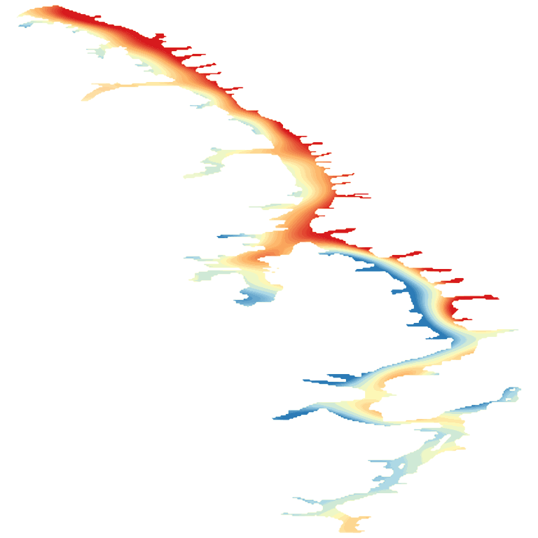

LakeScope › KY
Kentucky Lake today
Updated 2026-11-14 - Atlas Labs
Clear water, 61°F water, level rising, near normal, calm this morning.
Water level
354.60 ft
U.S. Army Corps of Engineers - 2026-11-14
7-day trend: rising (+0.37 ft). Compared with normal for this date: -0.2 ft (same weeks, 2016-2025).
Water clarity and algae
Clear water Last clear view: about a week ago. 2 cloudy passes since.
Surface temperature
61°F
seen from space on 2026-11-11

Ice
Open - 0% ice cover
Estimate from weather and satellite, not a measurement. Check the ice yourself before going on it.
Weather, next 3 days
| Day | Sky | High / low | Wind | Rain |
|---|---|---|---|---|
| Saturday | Sunny | 53 / 30°F | 5 mph N | 0% |
| Sunday | Mostly Sunny | 56 / 30°F | 5 mph NE | 0% |
| Monday | Sunny | 58 / 31°F | 5 mph ENE | 0% |
Sunrise 06:29 - sunset 16:44 - Waxing crescent. National Weather Service.
Get the LakeScope app: alerts and the 3-D view of Kentucky Lake